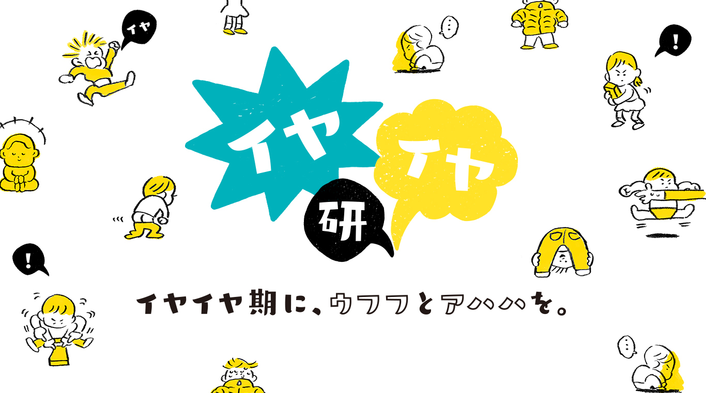
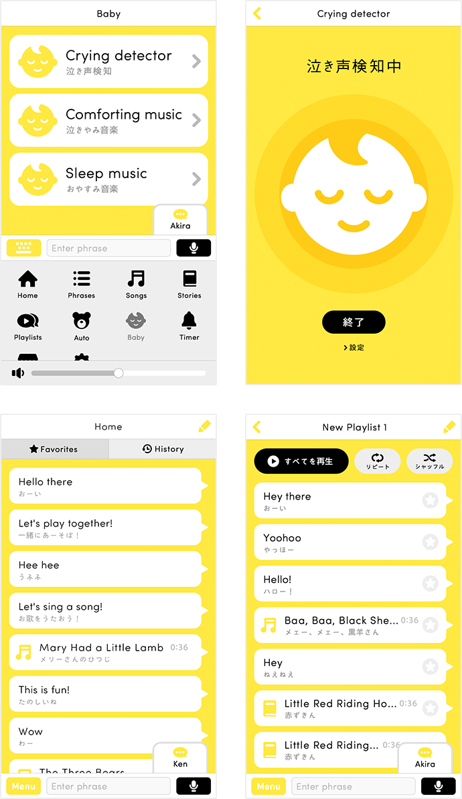
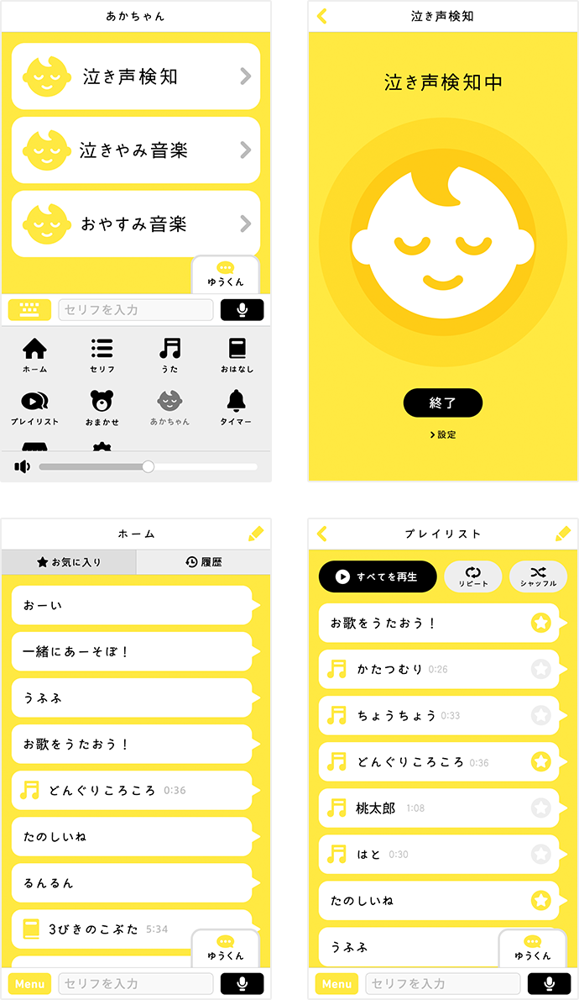
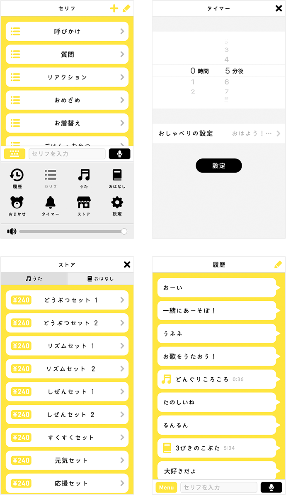

イヤイヤ期の研究を行う「イヤイヤ研」スタートのお知らせ
- 2018.1.18
-
いつもペチャットをご利用いただき、ありがとうございます。
ペチャット開発チームは、本日、博報堂こそだて家族研究所と共同で、イヤイヤ期に関する研究を行う「イヤイヤ研」をスタートし、イヤイヤ期の実態を解明する調査結果 第1弾を発表しましたのでお知らせいたします。
また、ペチャット開発チームは、イヤイヤ研の活動を通して得た知見を活かして、イヤイヤ期の子どもをもつ親をサポートする新機能の開発をスタートしました。 -

-
イヤイヤ研および調査結果については下記URLをご覧ください。
http://iya-iya.jp -
ペチャットは、これからも楽しく使いやすいアプリを目指してアップデートを行って参ります。
今後ともペチャットをどうぞよろしくお願いいたします。 -
- メール ：info@pechat.jp
- 電話 ：0120-663-167
- 住所 ：東京都江東区豊洲5-6-15NBF豊洲ガーデンフロント2F
- 受付時間：10:00～17:00 (土・日・祝日・年末年始除く)
ペチャットに英語版アプリが登場！
- 2017.12.7
-
いつもペチャットをご利用いただき、ありがとうございます。
本日、ペチャットを使って英語に楽しく触れられる「ペチャット英語」アプリをリリースしましたのでお知らせいたします。 - 
- ＜「ペチャット英語」アプリについて＞
-
日常の様々なシーンで使える1,000以上の英語のフレーズや、日本でもなじみのある英語の歌20曲、英語のお話を20話収録。
全てのフレーズに日本語訳を併記している為、英語が苦手な方でも気軽にご利用できます。
また、「ペチャット英語」と一緒に楽しめる絵本「My First English 〜はじめてのえいごずかん」を特設サイトから無料でダウンロードできます。
絵本に描かれているイラストを見ながら、英単語を聞いたり、発音をまねたり、楽しく英語に触れることができます。 -
詳細は下記URLをご覧ください。
http://pechat.jp/english/ - 「ペチャット英語」アプリのダウンロードはこちらから
-
ペチャットは、これからも楽しく使いやすいアプリを目指してアップデートを行って参ります。
今後ともペチャットをどうぞよろしくお願いいたします。 -
- メール ：info@pechat.jp
- 電話 ：0120-663-167
- 住所 ：東京都江東区豊洲5-6-15NBF豊洲ガーデンフロント2F
- 受付時間：10:00～17:00 (土・日・祝日・年末年始除く)
【重要なお知らせ】iPhone Xにおける不具合について
- 2017.11.24
-
先日、Appleよりリリースされた「iPhone X」において、ペチャットアプリにメニューが表示されない等の不具合が発生しております。
現在、対応準備を進めております。iPhone Xをご利用のお客様には、ご不便、ご迷惑をお掛けいたしますことをお詫び申し上げます。 -
- メール ：info@pechat.jp
- 電話 ：0120-663-167
- 住所 ：東京都江東区豊洲5-6-15NBF豊洲ガーデンフロント2F
- 受付時間：10:00～17:00 (土・日・祝日・年末年始除く)
アプリアップデートのお知らせ
- 2017.10.25
-
いつもペチャットをご利用いただき、ありがとうございます。
ペチャットのアプリアップデートを実施いたしましたので、お知らせいたします。 - 
-
＜今回の主なアップデート内容について＞
-
あかちゃんモードを追加
このモードでは、「泣きやみ音楽・おやすみ音楽」を計16種類収録しています。
また、ペチャットが泣き声や物音を検知して、スマホにお知らせする「泣き声検知機能」も搭載しました。 -
お気に入り機能を追加
好きなセリフや歌、お話をお気に入りリストに登録することができます。
-
プレイリスト機能を追加
好きなセリフや歌、お話をプレイリストに登録して、連続で再生したりランダムで再生したりできます。
-
おなまえボタンを追加
タップすると登録した名前をペチャットが呼ぶボタンをアプリ画面に追加しました。
-
声でおしゃべり機能を改修
タップすると登録した名前をペチャットが呼ぶボタンをアプリ画面に追加しました。
-
セリフ・歌・お話を追加
セリフリストに、11のカテゴリーを追加しました。また、ストアに歌を5セット計17曲、お話を10話追加しました。※歌・お話は有料です。
-
iOS11への対応
iOS11へのアップデートに伴い発生していたペチャットアプリの不具合の改修を行いました。
-
あかちゃんモードを追加
-
- メール ：info@pechat.jp
- 電話 ：0120-663-167
- 住所 ：東京都江東区豊洲5-6-15NBF豊洲ガーデンフロント2F
- 受付時間：10:00～17:00 (土・日・祝日・年末年始除く)
アプリアップデートのお知らせ
- 2017.6.27
-
いつもペチャットをご利用いただき、ありがとうございます。
ペチャットのアプリアップデートを実施いたしましたので、お知らせいたします。 - 
-
＜今回の主なアップデート内容について＞
-
UIの全体改修
より使いやすいアプリを目指し、UIの全体改修を行いました。
-
タイマー機能の追加（無料）
設定した時間になると、ペチャットがお知らせしてくれるタイマー機能を追加しました。
◯タイマー用のセリフ例
ごはん、お風呂、ハミガキといった生活習慣のうながしなど計38種類のセリフから選ぶことができます。- ・「ピンポンパンポーン！そろそろ起きる時間だよー」
- ・「うーん、お腹すいたー！今日のゴハンは何かなあ？」
- ・「ねえねえ、そろそろお着替えして、お出かけしよう！」
-
追加楽曲の販売を開始
ストアに楽曲を9セット計41曲追加しました。
◯楽曲例
有料でのダウンロードが可能です。- ・元気セット（3曲240円）
「おどるポンポコリン」「ハッピー・ジャムジャム」「ようかい体操 第一」 - ・応援セット（3曲240円）
「さんぽ」「やさしさに包まれたなら」「上を向いて歩こう」 - ・どうぶつセット１（5曲240円）
「アイアイ」「いぬのおまわりさん」「おつかいありさん」「ことりのうた」「ぞうさん」
- ・元気セット（3曲240円）
-
履歴機能の追加
よく使うおしゃべり機能を廃止し、履歴機能を追加しました。
履歴内の任意のセリフを削除することもできます。 -
セリフの追加
セリフリストの「質問」カテゴリーに8つのセリフを追加しました。
＜追加セリフ例＞- ・「パパのこと好き？」
- ・「今日はどんな天気かな？」
- ・「今日はなにして遊ぶ？」
-
UIの全体改修
-
- メール ：info@pechat.jp
- 電話 ：0120-663-167
- 住所 ：東京都江東区豊洲5-6-15NBF豊洲ガーデンフロント2F
- 受付時間：10:00～17:00 (土・日・祝日・年末年始除く)
一部Android端末からのご利用による、
音量・マイクの不具合について
- 2017.5.1
-
昨年12月の発売当初に出荷されたペチャットにおいて、一部Android端末から使用した際に、下記２件の不具合が発生しております。
1）ペチャット本体の音量が極端に小さい
2）ペチャット本体のマイクが正常に機能しない
不具合が発生しているお客様には、不具合の改善を行った新しいペチャットとの無償交換を行っております。
大変お手数ですが下記の「ペチャットお客様相談室」までご連絡くださいますようお願い申し上げます。
お客様にはご不便ご迷惑をお掛けいたしますことをお詫び申し上げます。
-
- メール ：info@pechat.jp
- 電話 ：0120-663-167
- 住所 ：東京都江東区豊洲5-6-15NBF豊洲ガーデンフロント2F
- 受付時間：10:00～17:00 (土・日・祝日・年末年始除く)
ペチャット販売開始のお知らせ
- 2016.12.9
-
本日、ペチャットの販売が開始されました。
取扱店舗は公式HPにてご確認ください。
https://pechat.jp/